샘플 서버 실행: npm run sample:start. 각 주소는 플랫폼·운영자 호출 없이 직접 열립니다. C~G에는 각각 한 종류의 결함이 앱 소스에 들어 있으며 입력·계산·주문은 같은 정상 로직입니다.
새 페이지의 실제 Vision 검출은 미검증입니다. 아래는 일반 브라우저 캡처·기능 검사이며 모델 입력/판정이 아닙니다. 비교 범위는 일반 기능·DOM 검사이며 별도 시각 assertion으로도 결함을 검출할 수 있습니다.
코드 936791a에서 독립 확인: 전체 28테스트·두 앱 빌드·직접 URL 7개와 기존 6상태 기능 검사 13/13 PASS. 최종 b2779f6은 추가 문서 변경뿐입니다.
독립 기능·요청 원기록 · 플랫폼 종료 후 직접 방문·영상 기록 · 전체 상태 검사 원기록
| 사례 | 직접 주소 |
|---|---|
| 정상 비교 | /store/a |
| 컴포넌트 뒤틀림·깨짐 | /store/c |
| 컴포넌트 겹침 | /store/d |
| 필수 안내 잘림 | /store/e |
| 상품 이미지 불일치 | /store/f |
| 차트 표현 오류 | /store/g |
/store/b는 기존 복합 화면 호환 주소입니다. 결함을 따로 테스트하려면 C~G를 사용하세요. 운영자 화면에도 링크 목록이 있습니다.
상품 그림, 안내, 주문 요약과 차트가 정상입니다.
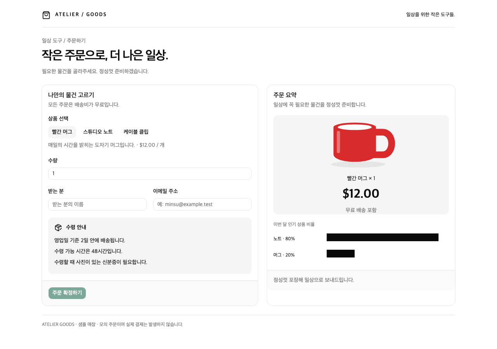
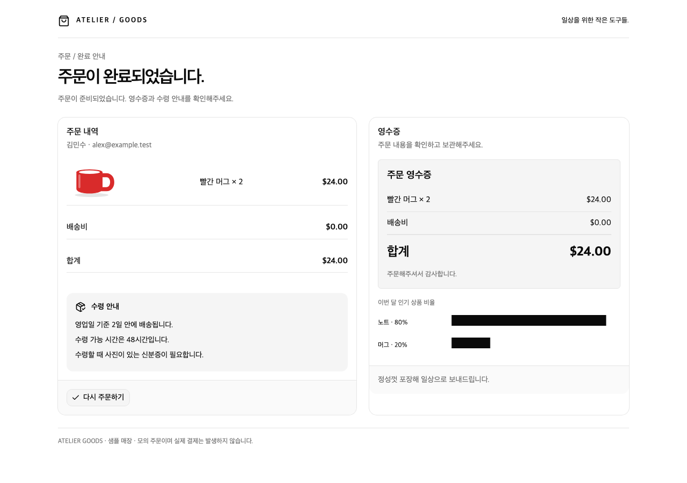
실제 주문 요약과 영수증이 과도하게 넓고 기울어지며 눌립니다.
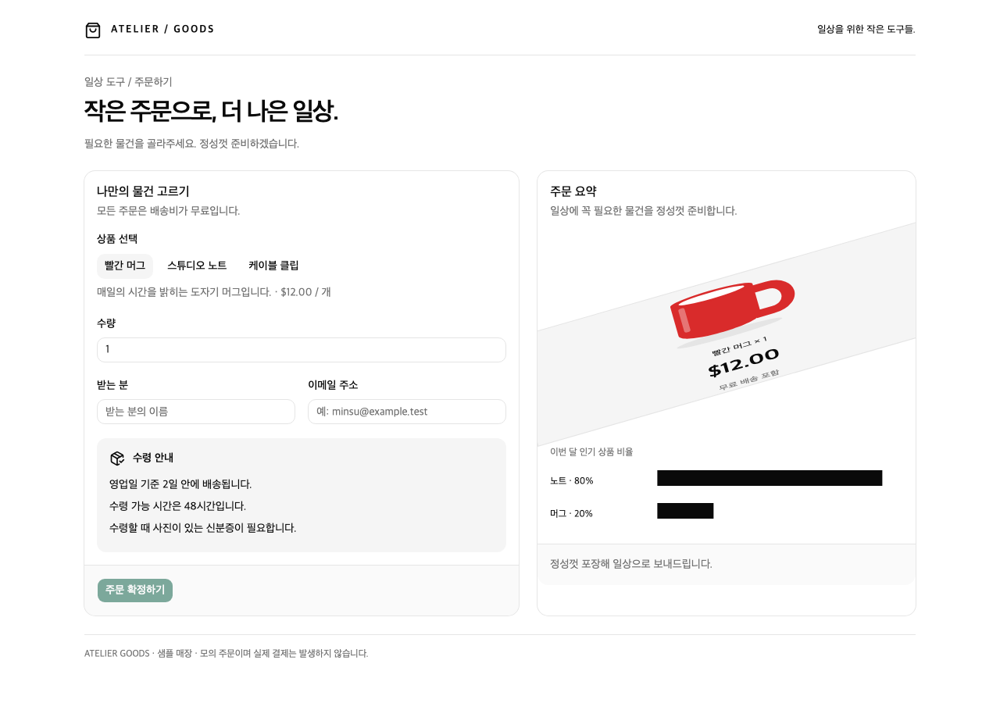
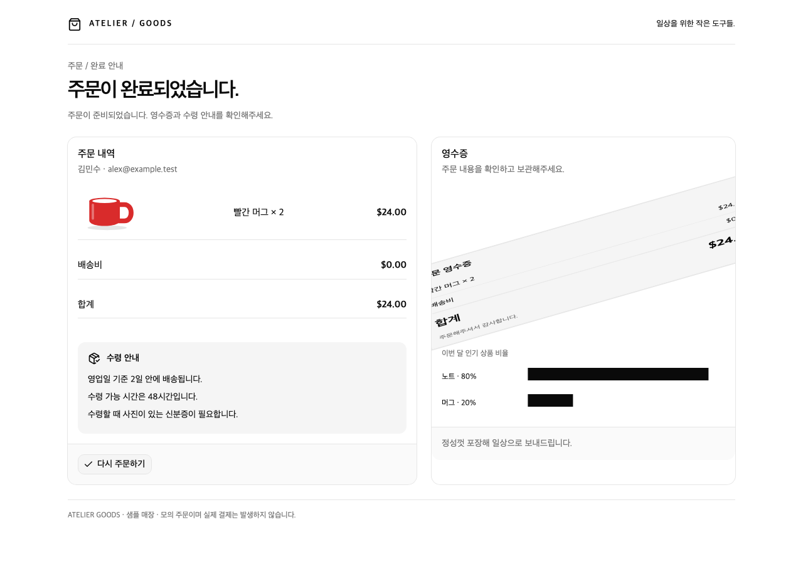
실제 차트의 잘못된 간격으로 상품·금액 또는 영수증 영역이 가려집니다.
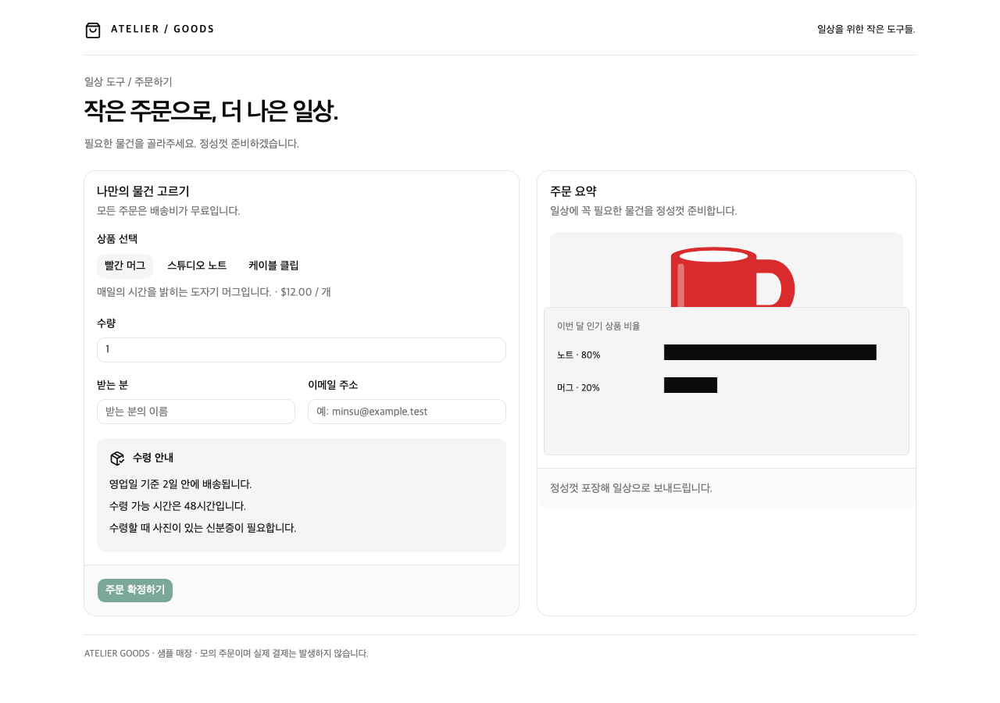
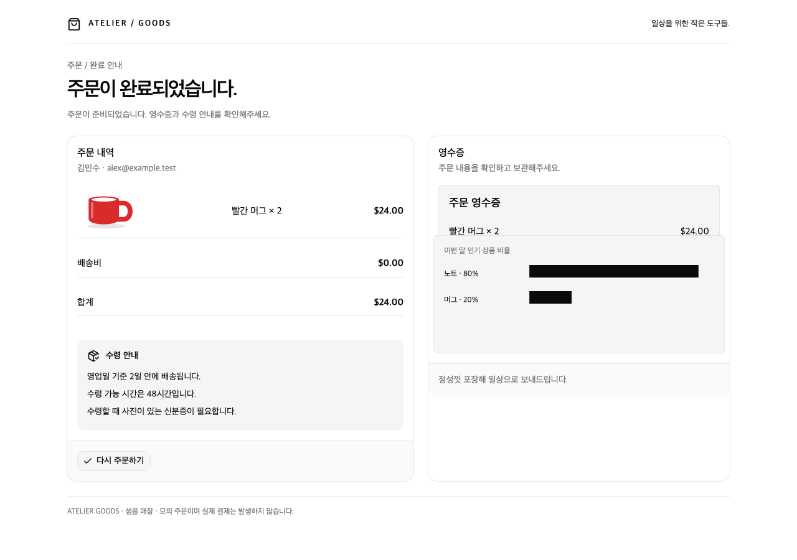
앱의 안내 높이 오류로 수령 시간과 신분증 안내가 보이지 않습니다.
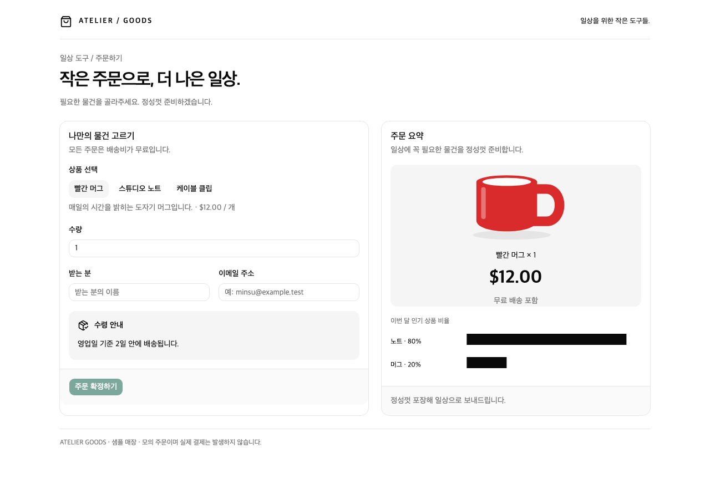
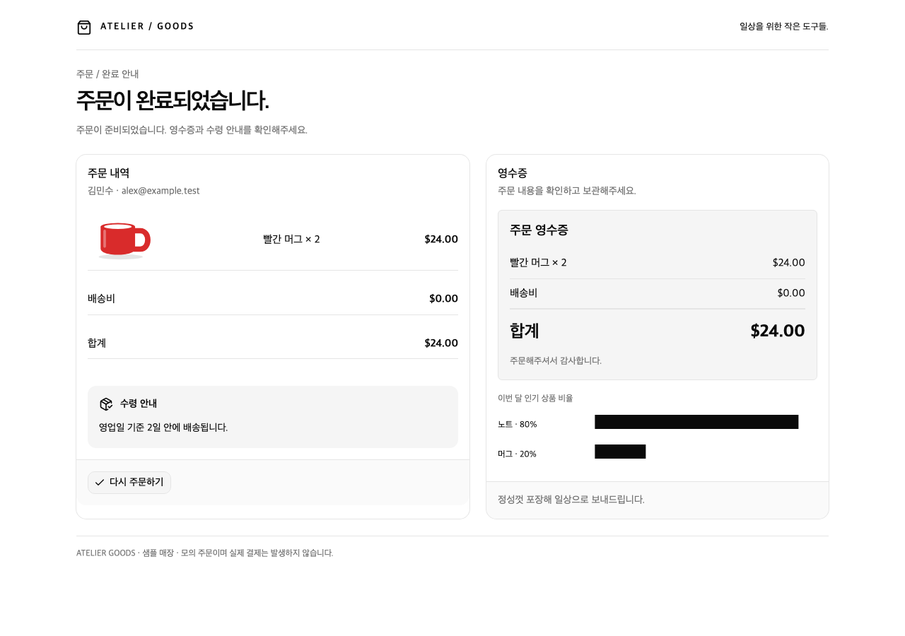
상품 선택과 주문 데이터는 빨간 머그인데 표시 그림은 파란색입니다.
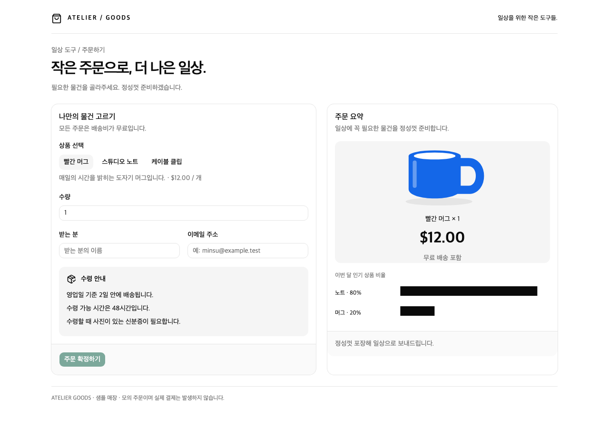
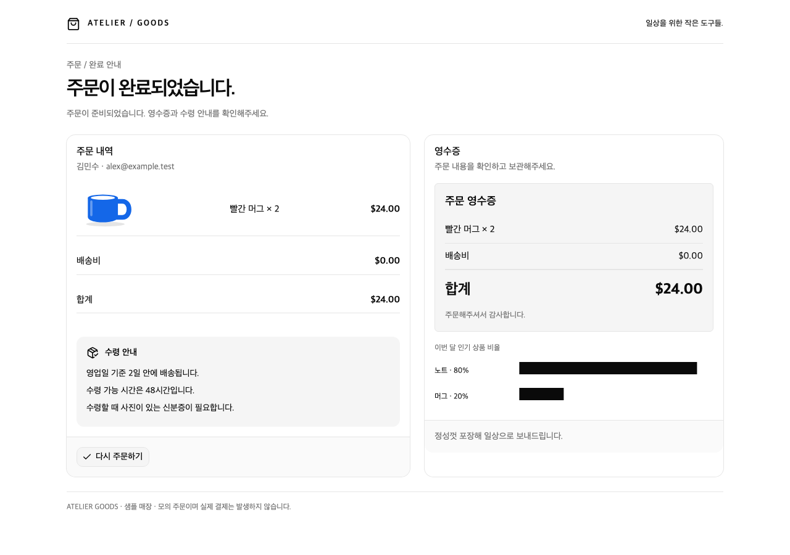
노트 80%·머그 20%는 맞지만 그려진 막대 비율이 뒤집힙니다.
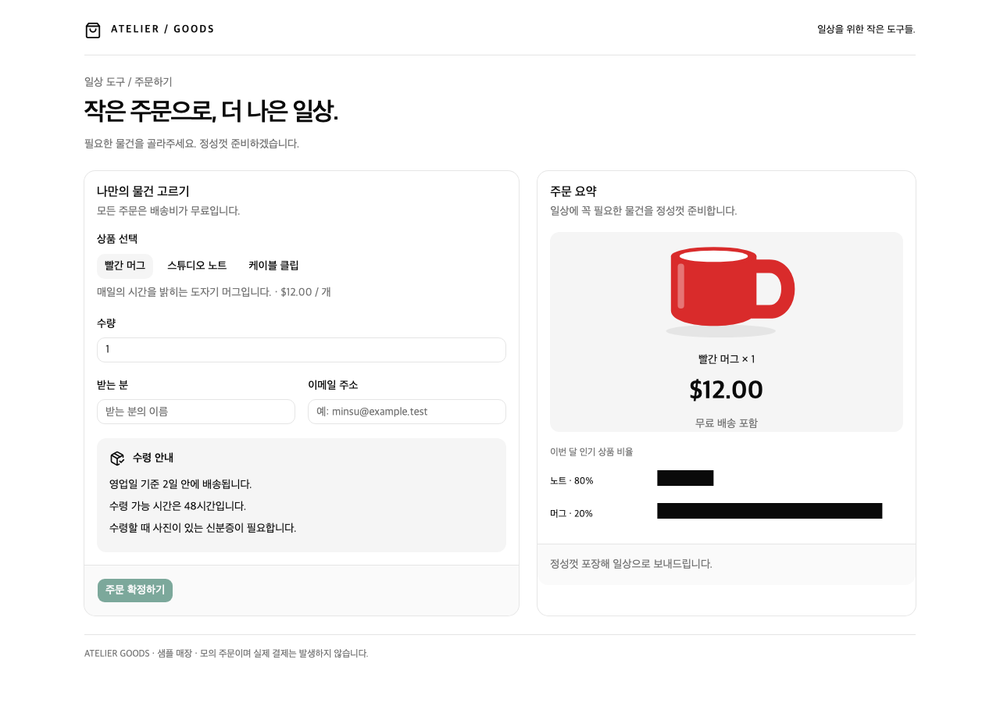
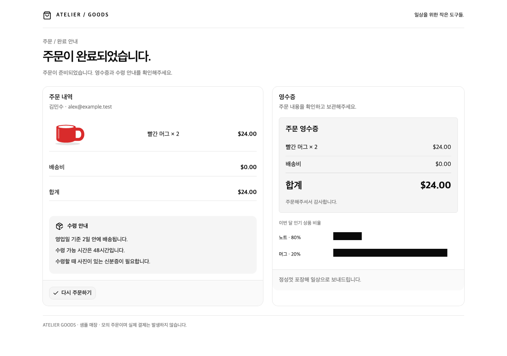